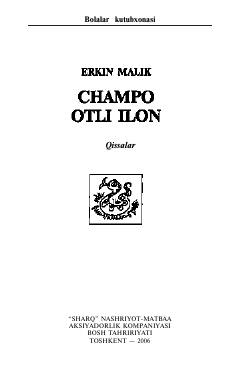

COBolalar va o'smirlar uchun hayotiy voqealarga boy qissalar to'plami.
Mazkur kitob bolalar va o'smirlarga bag'ishlangan qissalardan iborat bo'lib, unda insoniy munosabatlar, vatanparvarlik va hayotiy qadriyatlar tarannum etiladi. Asarda o'quvchilarni o'ylantiruvchi va o'zligini anglashga undovchi ta'sirli voqealar bayon etilgan.